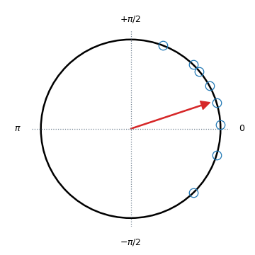
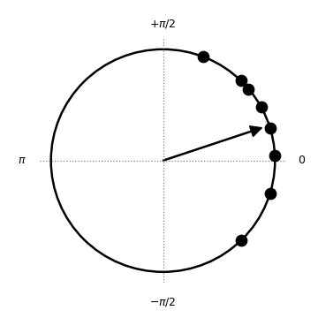
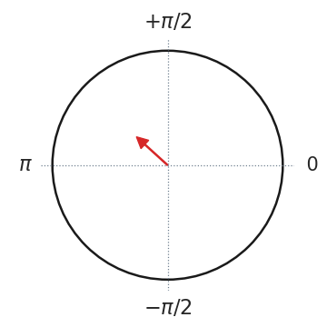

pingouin.plot_circmean¶
- pingouin.plot_circmean(angles, figsize=(4, 4), dpi=None, ax=None, kwargs_markers={'color': 'tab:blue', 'marker': 'o', 'mfc': 'none', 'ms': 10}, kwargs_arrow={'ec': 'tab:red', 'fc': 'tab:red', 'head_length': 0.1, 'head_width': 0.1, 'width': 0.01})¶
Plot the circular mean and vector length of a set of angles on the unit circle.
New in version 0.3.3.
- Parameters
- anglesarray or list
Angles (expressed in radians). Only 1D array are supported here.
- figsizetuple
Figsize in inches. Default is (4, 4).
- dpiint
Resolution of the figure in dots per inches.
- axmatplotlib axes
Axis on which to draw the plot.
- kwargs_markersdict
Optional keywords arguments that are passed to
matplotlib.axes.Axes.plotto control the markers aesthetics.- kwargs_arrowdict
Optional keywords arguments that are passed to
matplotlib.axes.Axes.arrowto control the arrow aesthetics.
- Returns
- axMatplotlib Axes instance
Returns the Axes object with the plot for further tweaking.
Examples
Default plot
>>> import pingouin as pg >>> ax = pg.plot_circmean([0.05, -0.8, 1.2, 0.8, 0.5, -0.3, 0.3, 0.7])
 Changing some aesthetics parameters
>>> import pingouin as pg >>> ax = pg.plot_circmean([0.05, -0.8, 1.2, 0.8, 0.5, -0.3, 0.3, 0.7], ... kwargs_markers=dict(color='k', mfc='k'), ... kwargs_arrow=dict(ec='k', fc='k'))
 >>> import pingouin as pg >>> import seaborn as sns >>> sns.set(font_scale=1.5, style='white') >>> ax = pg.plot_circmean([0.8, 1.5, 3.14, 5.2, 6.1, 2.8, 2.6, 3.2], ... kwargs_markers=dict(marker="None"))
